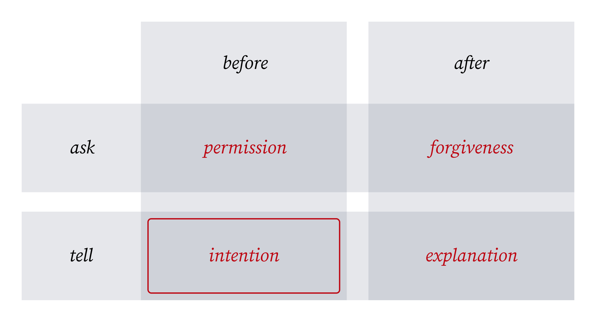

tilradiate intent
It’s easier to ask forgiveness than it is to get permission.
— Grace Hopper1
This is classic advice when operating in a large organization. There’s a problem to be solved, you have a bold solution in mind and everything necessary to take action, but there will be very real costs felt broadly. You think the tradeoff is worth it, but will your team or higher-ups agree?
You might assume you need permission to incur the costs, but you likely have the best information on the decision. If it’s a good idea, go ahead and do it. Grace Hopper encouraged doing the right thing whether or not your higher-ups know it to be. If you’re wrong or get flak for the costs: ask forgiveness; you acted in good faith.
This good advice is missing one critical thing: radiating intent2.

Rather than shifting from permission before to forgiveness after, shift from asking permission to telling as many as you can about your intention. Radiate it loudly and clearly before you act so that no one will be surprised.
Elizabeth Ayer, in her excellent article on radiating intent explains why it’s superior to asking forgiveness (which I’ve editorialized):
-
Invites participation from those with critical info or a desire to help.
-
If wrong it gives a chance for someone to stop you without leaving you waiting to begin. You control the timeline.
-
Leaves evidence of good faith. Better to be known as predictable than underhanded.
-
Keep responsibility and own the outcome, good or bad. Doesn’t transfer blame (or credit) as asking permission does.
-
Sets the example that bold action is encouraged from everyone, not just higher-ups.
If it’s a good idea, go ahead and do it. Say loudly what you are doing along the way. Radiate intent!
How to radiate intent
-
Write it down. Start with a short description of what you intend to do, and why. Don’t bury the lede. Expand your thinking from there: document assumptions, options and trade-offs. This will help you communicate clearly, create a single source of truth, and avoid repeating yourself.
-
Make timelines clear. When do you plan to begin? Are there significant milestones worth noting? If others want to participate they need to know when. If there is urgency, make it known.
-
Share visibly and broadly. Start in whatever channel your team uses most. Share in the channels your stakeholders use. If you’re in a smaller organization, just send it to everyone. As you share ask “who else should know about this?”
-
Share often. Share when you decide on your intention. Share a reminder. Share when you begin. Share when you reach milestones. Share when you complete. Share outcomes and lessons learned (and only then might you ask forgiveness!)
-
Scale volume with impact. Radiating intent matters most when those around you will be impacted most. Share broader and more frequently in situations that demand it, and narrower otherwise.
-
This advice as quoted was popularized by all around badass Grace Hopper. However various forms have been cited, back as far as St. Benedict in 500 AD. Likely some form of it has existed as long as there has been organized human society.
↩ -
This idea of clearly stating intent was popularized by L. David Marquet who in his book “Turn the Ship Around!” suggests that giving intent, not instructions, gives control and creates leaders.
↩